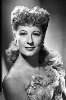
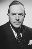

Country:United States, 80 minutes
Spoken languages:
Genres:Comedy
Director(s):Richard Whorf
Writer(s):Robert Libott, Frank Burt
Video Codec:Unknown
Number: 1443


Certification:
Storyline:
Pretty female attorney Abigail "AJ" Furnival is hired to keep high-flying cowboy movie star Ben Castle out of trouble in Las Vegas. Despite his many faults, Abigail falls in love with and marries Ben, with the hope that she can mold him into the virtuous hero he plays on the screen.
Cast:  


Medium: Original DVD,
Comments: Part of: Leading Ladies - Classic 20 Movie Collection
Loaned: No
Aspect ratio: Unknown